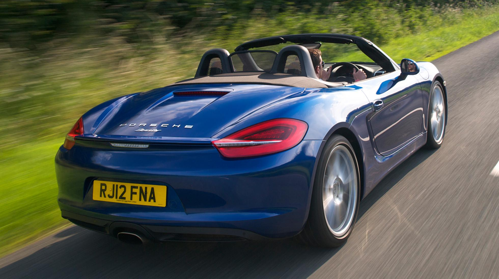
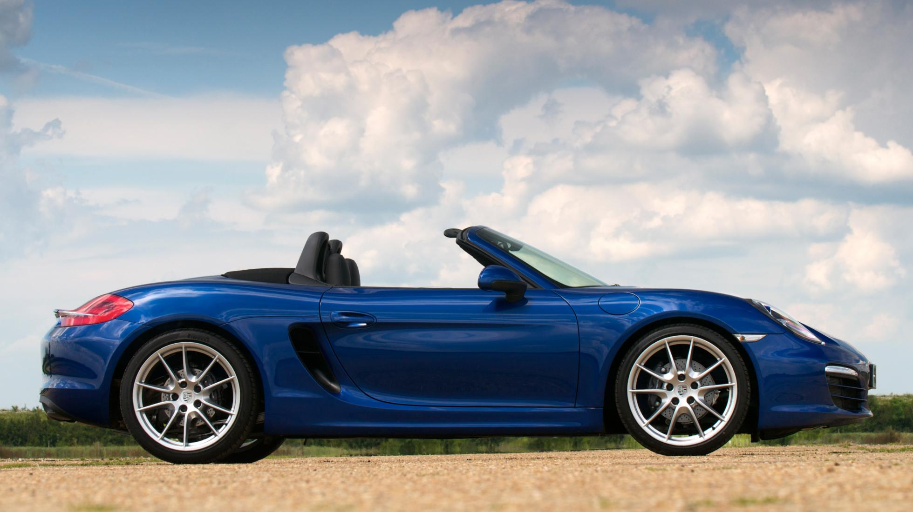
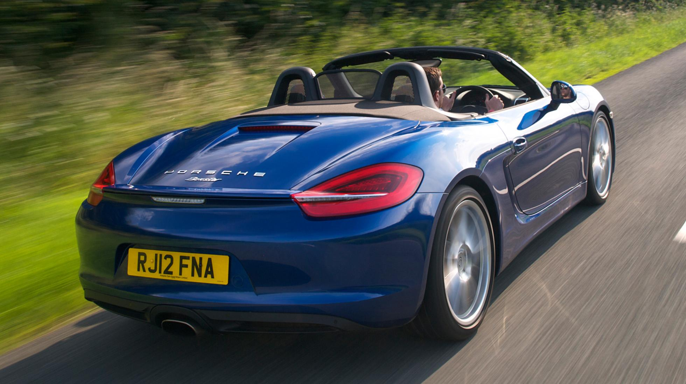
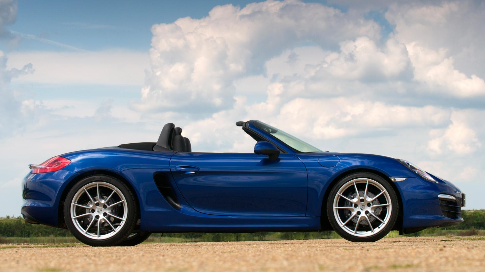
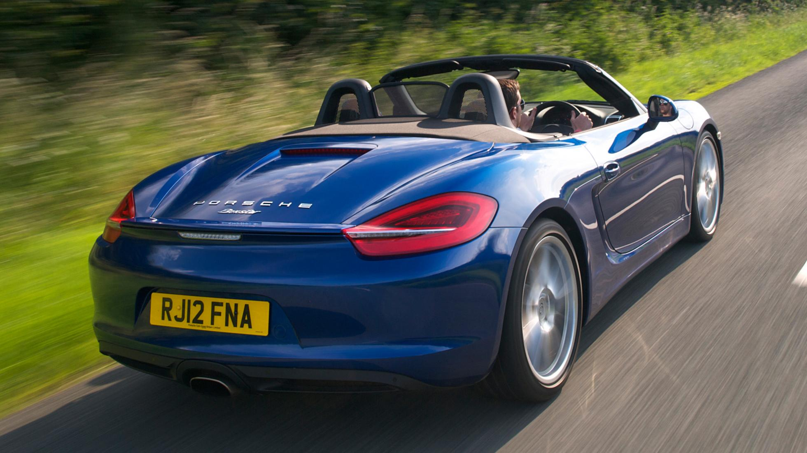
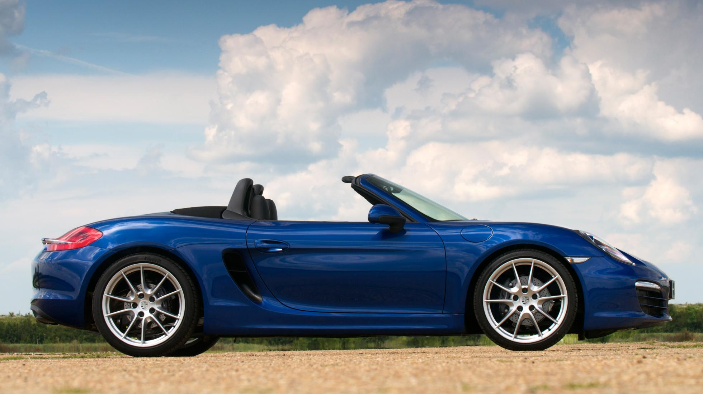

| MODELLO | Prezzo | l motore e disp. cilindri | CV | km/h | 0-100 | km/l | kg |
| 718 | 58.213 | 2500 B4 | 300 | 285 | 5,1 | 12,3 | 1655 |


Porsche 718 Boxster (e Boxster S) segna il passaggio ad una nuova era per il marchio di Stoccarda.Debutta il motore boxer quattro cilindri, dopo anni di fedeltà all’aspirato 6 cilindri. Consuma meno, ha più cavalli, tanta coppia in più e va più veloce. Motivi per essere “delusi” non ce ne sono proprio. Se gli interventi di aggiornamento dello stile convincono, allora sul piano tecnico è improbabile che possano aver sbagliato in Porsche.